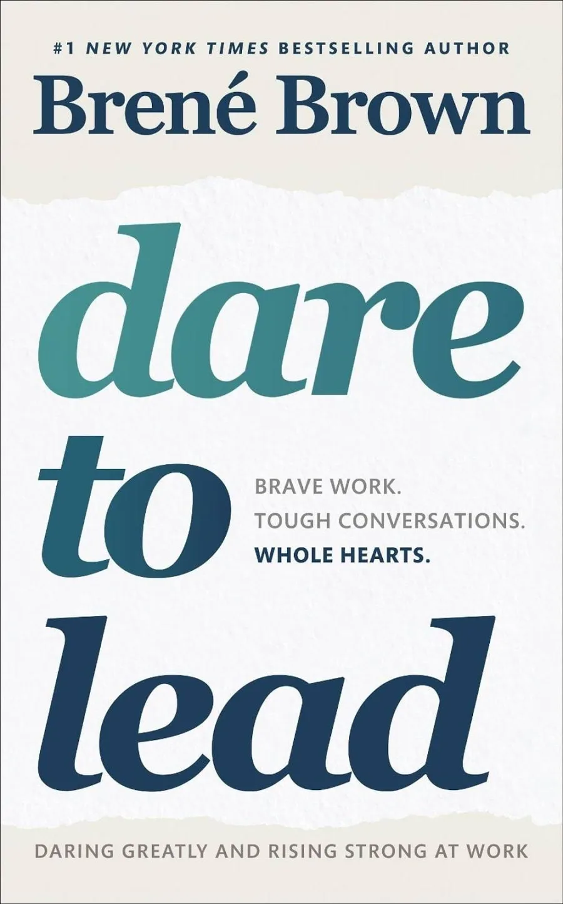
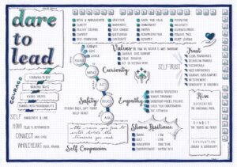

Dare to Lead is Brené Brown's application of two decades of shame, vulnerability, and courage research to the specific challenge of leadership. Built on new data gathered directly from leaders and organizations (in addition to the foundational research behind Daring Greatly and Rising Strong), the book answers the question Brown says she's asked more than any other by executives and managers worldwide: "How do I cultivate braver, more daring leaders, and how do I embed the value of courage in my organization's culture?"
Her answer rejects the idea that courage is an innate trait some people have and others don't. Instead, she defines daring leadership as a collection of four skill sets — Rumbling with Vulnerability, Living into Our Values, Braving Trust, and Learning to Rise — that are entirely teachable, observable, and measurable. Each skill set gets its own part of the book, its own tools, and its own vocabulary that leaders can bring back to their teams immediately.
What makes the book distinct from typical leadership literature is its refusal to separate the "soft" emotional work from the "hard" business of leading. Brown argues that armor — cynicism, perfectionism, being the knower, numbing out, leading from hurt instead of heart — is the single biggest driver of disengaged teams, broken trust, and failed culture change. The book is, at its core, a case for vulnerability as a leadership competency, not a liability.
A discussion, conversation, or meeting defined by a commitment to lean into vulnerability, stay curious, and be honest about the stories we're telling ourselves.
Identifying, operationalizing, and practicing the values that are most important to us — not as aspirations, but as day-to-day behaviors.
Creating trust with others and ourselves using the seven concrete elements of BRAVING — built in small moments, one marble at a time.
Developing the resilience and skills necessary to get back up after falling down, and to use setbacks as leadership capital.
Notice you've been emotionally hooked by something — a failure, hard feedback, a public misstep — and get curious about the feeling rather than pushing it away or numbing it.
Get rigorously honest about the story you're making up about the situation, the people involved, and yourself. Interrogate that story for accuracy instead of accepting it at face value.
Use what the rumble reveals to write a braver, more accurate ending — and change how you engage going forward. This is where the lesson gets integrated into how you lead.
Brown's diagnostic instrument for measuring a leader's or team's strength across all four skill sets — used to identify where the real growth edges are, rather than guessing.
A rumble starter for defusing hidden assumptions. Naming the unverified story out loud — before reacting to it — slows the emotional hijack and turns an assumption into a conversation.
For each core value: one sentence defining it, three behaviors that support it, two or three "shadow" behaviors that betray it while disguised as the value itself.
A structured self- and team-assessment: which of the seven trust elements is hardest for me to practice? Which is hardest for me to ask of others? Used in 1:1s and team retros.

Brown's instruction: read through the full list below and pick your two most important core values — not ten. These become the filter you run hard decisions, hiring calls, and hard conversations through. The full list is reproduced here from Brené Brown's official resource.
Vulnerability is not weakness; it's our greatest measure of courage.
Clear is kind. Unclear is unkind.
You can choose courage, or you can choose comfort. You cannot choose both.
Daring leaders who live into their values are never silent about hard things.
Courage is contagious. Every time we choose courage, we make everyone around us a little better and the world a little braver.
The single most transformative idea in Dare to Lead is that vulnerability and armor are the actual, hidden variables behind almost every leadership failure people misdiagnose as something else. A team that "lacks alignment" often actually has a leader avoiding a hard, values-based conversation. A "trust problem" is almost always one of the seven specific BRAVING elements, quietly broken and never named. A leader who "can't take feedback" is usually armored — leading from hurt rather than heart, protecting themselves from a vulnerability they haven't learned to metabolize. Once you have the vocabulary — rumble, delta, shadow value, marble jar — you start seeing armor everywhere, including in yourself, and that visibility is the entire unlock. You cannot fix what you can't name.
Dare to Lead takes Brené Brown's shame and vulnerability research — developed over two decades and popularized in Daring Greatly and Rising Strong — and translates it directly into the daily mechanics of leading people. Its central claim is disarmingly simple: courage is not a personality trait, it's a set of four learnable skills, and the biggest obstacle to practicing them is the armor leaders unconsciously put on to protect themselves from feeling exposed.
The book earns its length by giving every abstract idea a concrete tool. Vulnerability becomes rumbling — with named rumble starters like "the story I'm telling myself is ___." Values become two words, defined in one sentence, backed by three supporting behaviors and named shadow behaviors. Trust becomes BRAVING — seven elements specific enough to coach against. Resilience becomes the Reckoning, the Rumble, and the Revolution — a repeatable process rather than a personality trait some people have and others don't.
What elevates this above a typical "soft skills" leadership book is Brown's insistence that none of this is optional or secondary to "real" business results. Her research ties armored leadership directly to disengagement, attrition, and stalled innovation — and daring leadership directly to the opposite. The Armored vs. Daring Leadership list alone, brought into a single team meeting, tends to generate more honest self-recognition than most 360-degree reviews.
The honest summary: if you lead people — officially or not — and you've ever sensed that your team is compliant but not truly committed, or that hard conversations keep getting avoided until they explode, Dare to Lead gives you the vocabulary and the tools to name what's actually happening and change it. It asks more of a leader emotionally than most leadership books dare to, and that's exactly the point.